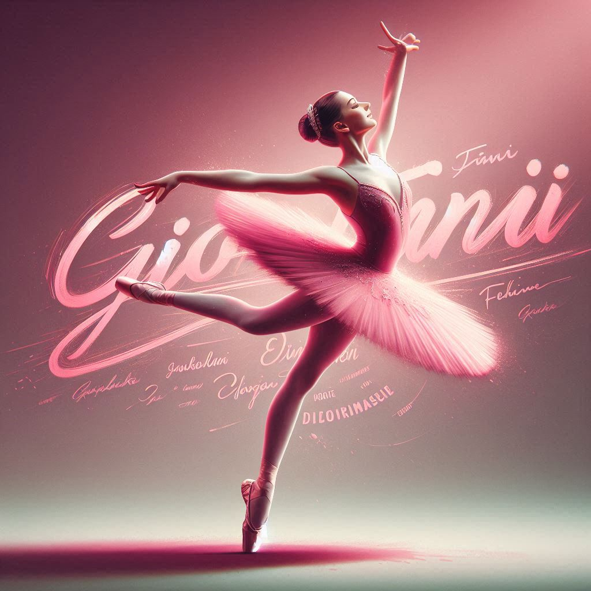

CIAO MI PRESENTO
Mi chiamo Giorgia
sono di Nereto e ho 17 anni
Mi piace la danza e l'ho frequentata per 10 anni.

Vado alla scuola Peano Rosa e frequento il corso informatica.
Mi piace ascoltare la musica e leggere libri di psicologia. Mi piace uscire con gli
amici e andare in giro. Mi piace il mare. La mia materia preferita è economia. Prima di fare le ragionerie ho frequentato
il liceo delle scienze umano opz economico sociale.Oltre alla danza ho praticato anche il nuoto per diversi anni.
Mi piacerebbe fare arti marziali, la mia passione da piccola era fare l'avvocato ma con il tempo
mi sono appassionata alla psicologia.
Mi piacerebbe anche frequentare l'univerisità ed un giorno potermi trasferire altrove puntando o all'america o alla spagna.
la musica che ascolto principalmente è quella commerciale ascoltata da tutti, ma mi piacciono anche vari generi.
Mi piacerebbe andare in palestra e ricominciare nuoto, nel tempo libero mi piace andare in motorino.
Mi piacciono tanto gli animali da piccola avevo un cagnolino, ma attualmente vorrei prendere un gattino.
mi piace andare a fare serata sopratutto d'estate